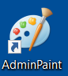
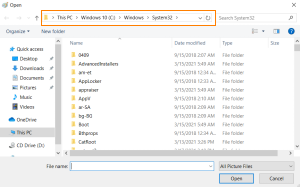
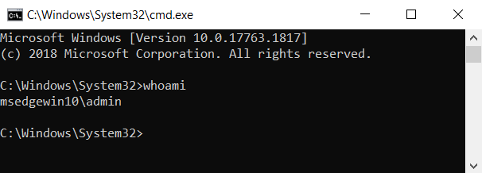

6. Insecure GUI Apps (Citrix Method)
Insecure GUI Apps (Citrix Method)• On some (older) versions of Windows, users could be granted the permission to run certain GUI apps with administrator privileges.
• There are often numerous ways to spawn command prompts from within GUI apps, including using native Windows functionality.
• Since the parent process is running with administrator privileges, the spawned command prompt will also run with these privileges.
• I call this the “Citrix Method” because it uses many of the same techniques used to break out of Citrix environments.
Example
1. List of local Administrators
C:\> net localgroup administrators
2. Open the possible GUI applications that could run as local administrator
our example: 3. Check if there is a
running GUI application running as one of the local administrator found above
The following command will display all lines containing “admin” OR “Administrator” OR "IEUser"
C:\> tasklist /V | findstr "admin Administrator IEUser"
4. In Paint, click File → Open
 5. In the navigation input, replace the contents with:
file://c:/windows/system32/cmd.exe
or
c:/windows/system32/cmd.exe
6. Press Enter. A command prompt should open running with admin privileges.
